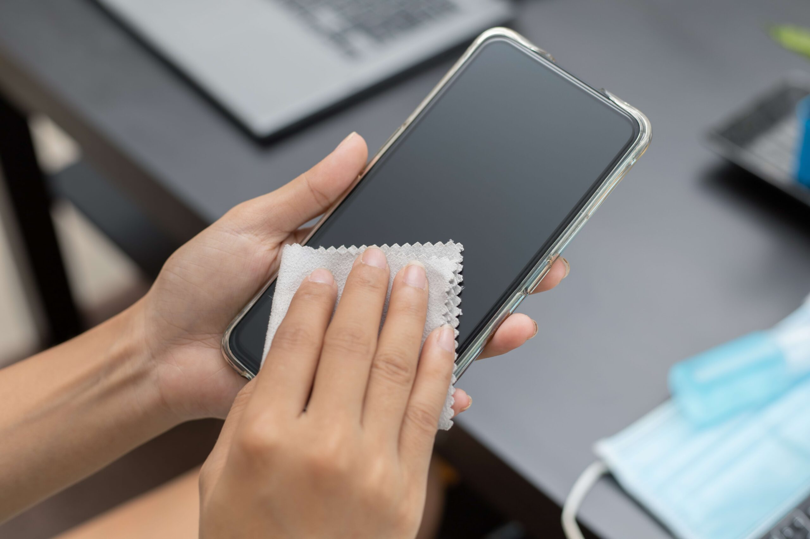
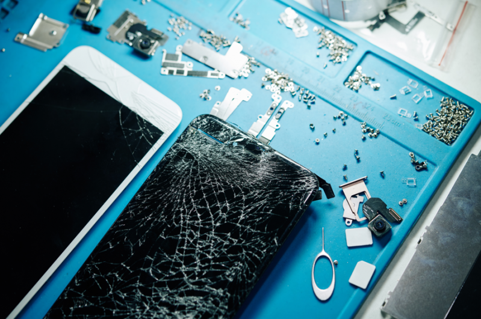
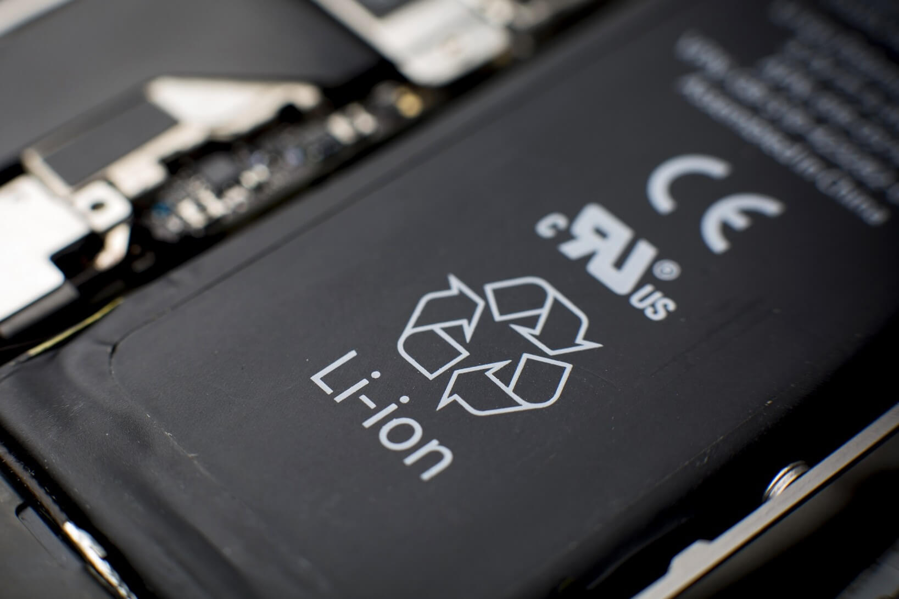

Um pouco sobre assitencia técnica em celulares

Assistência técnica de celular é um serviço especializado em reparos e manutenção de dispositivos móveis. Esse tipo de assistência abrange desde problemas simples, como troca de tela quebrada e substituição de baterias, até questões mais complexas, como reparo de placas-mãe e resolução de falhas de software. As assistências técnicas podem ser autorizadas, que são aquelas que têm a aprovação das fabricantes para realizar reparos com peças originais, ou independentes, que podem utilizar peças de reposição de diferentes qualidades. Além dos reparos, muitas assistências também oferecem serviços de consultoria, venda de acessórios e proteção de dados.
Películas
As películas para celulares são acessórios essenciais para proteger a tela dos dispositivos contra arranhões, quedas e sujeiras. Existem diferentes tipos, cada um com características específicas:
- Película de Vidro Temperado:
- Película de Gel ou TPU:
- Película Anti-Reflexo:
- Película de Privacidade:
Proporciona alta resistência contra impactos e arranhões, além de manter a sensibilidade ao toque e a clareza da tela.
É flexível e oferece uma proteção básica contra arranhões, sendo menos resistente a quedas, mas mais fácil de aplicar e remover.
Reduz o brilho da tela em ambientes muito iluminados, facilitando a visualização.
Limita o ângulo de visão da tela, protegendo a privacidade do usuário em locais públicos.
Cada tipo de película atende a diferentes necessidades e preferências dos usuários, ajudando a prolongar a vida útil dos celulares.
Troca do display
Trocar o display de um celular é uma tarefa delicada e técnica, geralmente necessária quando a tela está rachada, não responde ao toque ou apresenta falhas visuais. Esse processo envolve desmontar o aparelho com cuidado para não danificar outros componentes, como a bateria ou a placa-mãe. É essencial utilizar ferramentas apropriadas, como espátulas plásticas e chaves específicas, para evitar danos. Após remover a tela danificada, o novo display é instalado, conectando corretamente os cabos flexíveis e assegurando que todos os componentes estejam bem ajustados. Por fim, o aparelho é remontado e testado para garantir que tudo funcione perfeitamente. Essa troca deve ser realizada por um profissional ou alguém com experiência, pois uma instalação inadequada pode causar problemas adicionais ou até inutilizar o dispositivo.
Bateria ruim?
Vamos entender!
A bateria de um telefone celular é um componente crucial que fornece energia para o funcionamento do dispositivo. A maioria dos celulares modernos utiliza baterias de íons de lítio, conhecidas por sua alta densidade de energia e eficiência. Essas baterias são recarregáveis, leves e têm uma vida útil relativamente longa. No entanto, com o tempo, a capacidade da bateria pode diminuir devido ao desgaste natural, uso excessivo ou carregamento inadequado. Para maximizar a vida útil da bateria, é recomendável evitar temperaturas extremas, não deixar o dispositivo carregar além do necessário e utilizar carregadores de qualidade. O gerenciamento eficiente da energia, como o ajuste do brilho da tela e o fechamento de aplicativos desnecessários, também ajuda a prolongar a duração da carga diária.